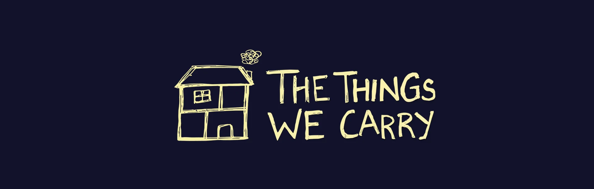
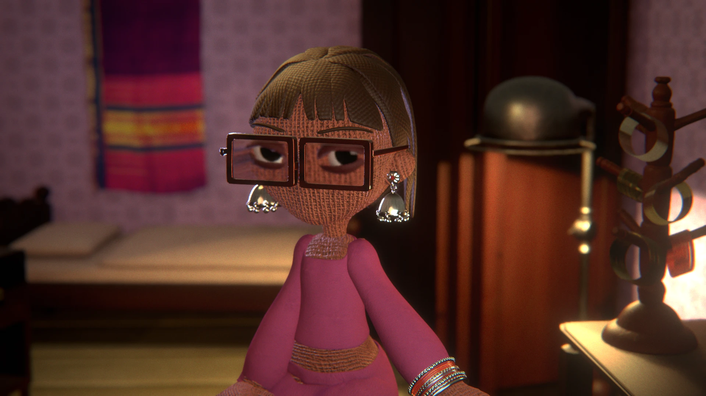
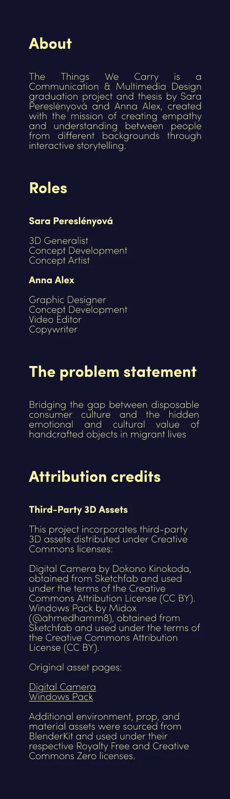
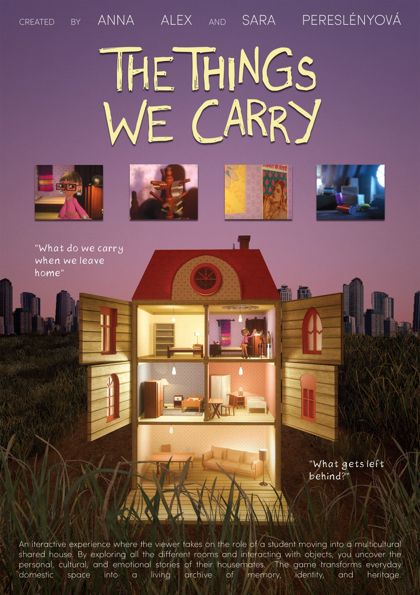

Concept · 3D · Storytelling
The Things We Carry
A short introduction to the project. Keep this brief and let the visual case study below tell the rest of the story.








 SARA
SARA
Concept · 3D · Storytelling
A short introduction to the project. Keep this brief and let the visual case study below tell the rest of the story.



